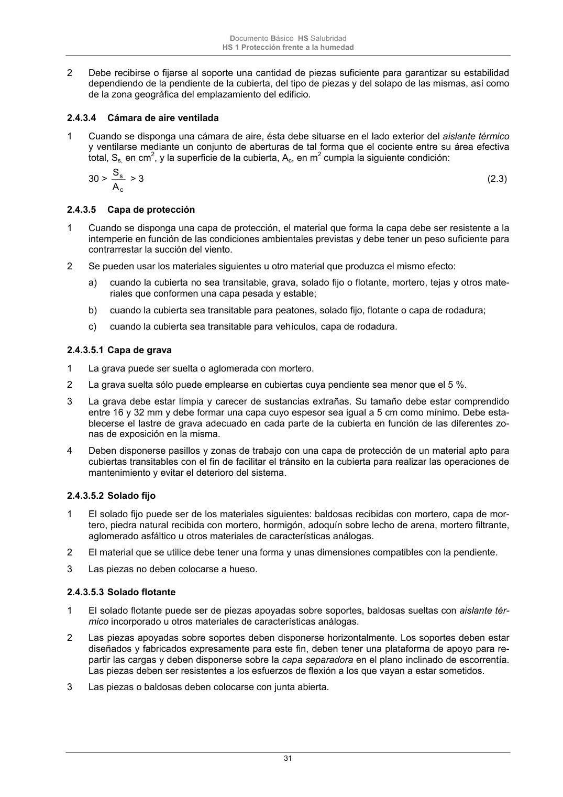

DB-HS · 2.4.3.5.2 Solado fijo · versión 2022-06-14 · capa oficial
Formatos: JSON compacto · Markdown · PDF fuente
Ámbito del documento · texto del ámbito · documento y tablas
ID técnico a0072 · PDF pág. 31 · jerarquía no validada por persona · contrastado con el literal de la página 31 (candidato tipográfico); no validado por persona · padre: a0066
2.4.3.5.2 Solado fijo 1 El solado fijo puede ser de los materiales siguientes: baldosas recibidas con mortero, capa de mor- tero, piedra natural recibida con mortero, hormigón, adoquín sobre lecho de arena, mortero filtrante, aglomerado asfáltico u otros materiales de características análogas. 2 El material que se utilice debe tener una forma y unas dimensiones compatibles con la pendiente. 3 Las piezas no deben colocarse a hueso.

PDF fuente redistribuible: copia fiel enlazada en esta página (SHA256 verificado).